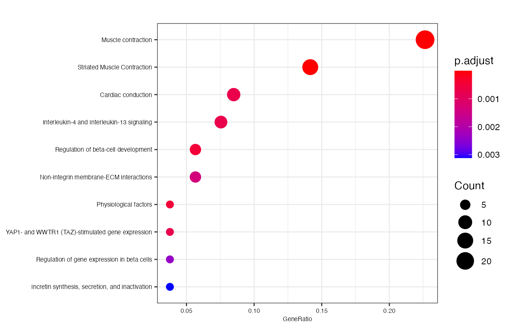

scGPS introduction
Quan Nguyen and Michael Thompson
2019-06-25
vignette.Rmd1. Installation instruction
# To install scGPS from github (Depending on the configuration of the local
# computer or HPC, possible custom C++ compilation may be required - see
# installation trouble-shootings below)
devtools::install_github("IMB-Computational-Genomics-Lab/scGPS")
# for C++ compilation trouble-shooting, manual download and installation can be
# done from github
git clone https://github.com/IMB-Computational-Genomics-Lab/scGPS
# then check in scGPS/src if any of the precompiled (e.g. those with *.so and
# *.o) files exist and delete them before recompiling
# then with the scGPS as the R working directory, manually install and load
# using devtools functionality
# Install the package
devtools::install()
#load the package to the workspace
library(scGPS)2. A simple workflow of the scGPS:
The purpose of this workflow is to solve the following task:
- Given a mixed population with known subpopulations, estimate transition scores between these subpopulation.
2.1 Create scGPS objects
# load mixed population 1 (loaded from day_2_cardio_cell_sample dataset, named it as day2)
library(scGPS)
day2 <- day_2_cardio_cell_sample
mixedpop1 <- new_scGPS_object(ExpressionMatrix = day2$dat2_counts,
GeneMetadata = day2$dat2geneInfo, CellMetadata = day2$dat2_clusters)
# load mixed population 2 (loaded from day_5_cardio_cell_sample dataset, named it as day5)
day5 <- day_5_cardio_cell_sample
mixedpop2 <- new_scGPS_object(ExpressionMatrix = day5$dat5_counts,
GeneMetadata = day5$dat5geneInfo, CellMetadata = day5$dat5_clusters)2.2 Run prediction
# select a subpopulation
c_selectID <- 1
# load gene list (this can be any lists of user selected genes)
genes <- training_gene_sample
genes <- genes$Merged_unique
# load cluster information
cluster_mixedpop1 <- colData(mixedpop1)[,1]
cluster_mixedpop2 <- colData(mixedpop2)[,1]
#run training (running nboots = 3 here, but recommend to use nboots = 50-100)
LSOLDA_dat <- bootstrap_prediction(nboots = 3, mixedpop1 = mixedpop1,
mixedpop2 = mixedpop2, genes = genes, c_selectID = c_selectID,
listData = list(), cluster_mixedpop1 = cluster_mixedpop1,
cluster_mixedpop2 = cluster_mixedpop2, trainset_ratio = 0.7)
names(LSOLDA_dat)
#> [1] "Accuracy" "ElasticNetGenes" "Deviance"
#> [4] "ElasticNetFit" "LDAFit" "predictor_S1"
#> [7] "ElasticNetPredict" "LDAPredict"2.3 Summarise results
# summary results LDA
sum_pred_lda <- summary_prediction_lda(LSOLDA_dat = LSOLDA_dat, nPredSubpop = 4)
# summary results Lasso to show the percent of cells
# classified as cells belonging
sum_pred_lasso <- summary_prediction_lasso(LSOLDA_dat = LSOLDA_dat,
nPredSubpop = 4)
# plot summary results
plot_sum <-function(sum_dat){
sum_dat_tf <- t(sum_dat)
sum_dat_tf <- na.omit(sum_dat_tf)
sum_dat_tf <- apply(sum_dat[, -ncol(sum_dat)],1,
function(x){as.numeric(as.vector(x))})
sum_dat$names <- gsub("ElasticNet for subpop","sp", sum_dat$names )
sum_dat$names <- gsub("in target mixedpop","in p", sum_dat$names)
sum_dat$names <- gsub("LDA for subpop","sp", sum_dat$names )
sum_dat$names <- gsub("in target mixedpop","in p", sum_dat$names)
colnames(sum_dat_tf) <- sum_dat$names
boxplot(sum_dat_tf, las=2)
}
plot_sum(sum_pred_lasso)
# summary accuracy to check the model accuracy in the leave-out test set
summary_accuracy(object = LSOLDA_dat)
#> [1] 67.28972 63.67925 66.82464
# summary maximum deviance explained by the model
summary_deviance(object = LSOLDA_dat)
#> $allDeviance
#> [1] "0.0596" "0.08978" "0.07554"
#>
#> $DeviMax
#> dat_DE$Dfd Deviance DEgenes
#> 1 0 0.08978 genes_cluster1
#> 2 1 0.08978 genes_cluster1
#> 3 2 0.08978 genes_cluster1
#> 4 3 0.08978 genes_cluster1
#> 5 4 0.08978 genes_cluster1
#> 6 remaining DEgenes remaining DEgenes remaining DEgenes
#>
#> $LassoGenesMax
#> NULL3. A complete workflow of the scGPS:
The purpose of this workflow is to solve the following task:
- Given an unknown mixed population, find clusters and estimate relationship between clusters
3.1 Identify clusters in a dataset using CORE
(skip this step if clusters are known)
# find clustering information in an expresion data using CORE
day5 <- day_5_cardio_cell_sample
cellnames <- colnames(day5$dat5_counts)
cluster <-day5$dat5_clusters
cellnames <-data.frame("Cluster"=cluster, "cellBarcodes" = cellnames)
mixedpop2 <-new_scGPS_object(ExpressionMatrix = day5$dat5_counts,
GeneMetadata = day5$dat5geneInfo, CellMetadata = cellnames)
CORE_cluster <- CORE_clustering(mixedpop2, remove_outlier = c(0), PCA=FALSE)
# to update the clustering information, users can ...
key_height <- CORE_cluster$optimalClust$KeyStats$Height
optimal_res <- CORE_cluster$optimalClust$OptimalRes
optimal_index = which(key_height == optimal_res)
clustering_after_outlier_removal <- unname(unlist(
CORE_cluster$Cluster[[optimal_index]]))
corresponding_cells_after_outlier_removal <- CORE_cluster$cellsForClustering
original_cells_before_removal <- colData(mixedpop2)[,2]
corresponding_index <- match(corresponding_cells_after_outlier_removal,
original_cells_before_removal )
# check the matching
identical(as.character(original_cells_before_removal[corresponding_index]),
corresponding_cells_after_outlier_removal)
#> [1] TRUE
# create new object with the new clustering after removing outliers
mixedpop2_post_clustering <- mixedpop2[,corresponding_index]
colData(mixedpop2_post_clustering)[,1] <- clustering_after_outlier_removal3.2 Identify clusters in a dataset using SCORE (Stable Clustering at Optimal REsolution)
(skip this step if clusters are known)
(SCORE aims to get stable subpopulation results by introducing bagging aggregation and bootstrapping to the CORE algorithm)
# find clustering information in an expresion data using SCORE
day5 <- day_5_cardio_cell_sample
cellnames <- colnames(day5$dat5_counts)
cluster <-day5$dat5_clusters
cellnames <-data.frame("Cluster"=cluster, "cellBarcodes" = cellnames)
mixedpop2 <-new_scGPS_object(ExpressionMatrix = day5$dat5_counts,
GeneMetadata = day5$dat5geneInfo, CellMetadata = cellnames )
SCORE_test <- CORE_bagging(mixedpop2, remove_outlier = c(0), PCA=FALSE,
bagging_run = 20, subsample_proportion = .8)3.3 Visualise all cluster results in all iterations
dev.off()
#> null device
#> 1
##3.2.1 plot CORE clustering
p1 <- plot_CORE(CORE_cluster$tree, CORE_cluster$Cluster,
color_branch = c("#208eb7", "#6ce9d3", "#1c5e39", "#8fca40", "#154975",
"#b1c8eb"))
p1
#> $mar
#> [1] 1 5 0 1
#extract optimal index identified by CORE
key_height <- CORE_cluster$optimalClust$KeyStats$Height
optimal_res <- CORE_cluster$optimalClust$OptimalRes
optimal_index = which(key_height == optimal_res)
#plot one optimal clustering bar
plot_optimal_CORE(original_tree= CORE_cluster$tree,
optimal_cluster = unlist(CORE_cluster$Cluster[optimal_index]),
shift = -2000)
#> Ordering and assigning labels...
#> 2
#> 162335NA
#> 3
#> 162335423
#> Plotting the colored dendrogram now....
#> Plotting the bar underneath now....
##3.2.2 plot SCORE clustering
#plot all clustering bars
plot_CORE(SCORE_test$tree, list_clusters = SCORE_test$Cluster)
#plot one stable optimal clustering bar
plot_optimal_CORE(original_tree= SCORE_test$tree,
optimal_cluster = unlist(SCORE_test$Cluster[SCORE_test$optimal_index]),
shift = -100)
#> Ordering and assigning labels...
#> 2
#> 162335NA
#> 3
#> 162335423
#> Plotting the colored dendrogram now....
#> Plotting the bar underneath now....3.5 Find gene markers and annotate clusters
#load gene list (this can be any lists of user-selected genes)
genes <-training_gene_sample
genes <-genes$Merged_unique
#the gene list can also be objectively identified by differential expression
#analysis cluster information is requied for find_markers. Here, we use
#CORE results.
#colData(mixedpop2)[,1] <- unlist(SCORE_test$Cluster[SCORE_test$optimal_index])
suppressMessages(library(locfit))
suppressMessages(library(DESeq))
DEgenes <- find_markers(expression_matrix=assay(mixedpop2),
cluster = colData(mixedpop2)[,1],
selected_cluster=unique(colData(mixedpop2)[,1]))
#the output contains dataframes for each cluster.
#the data frame contains all genes, sorted by p-values
names(DEgenes)
#> [1] NA NA NA
#> [4] NA "DE_Subpop1vsRemaining" "DE_Subpop2vsRemaining"
#> [7] "DE_Subpop3vsRemaining" "DE_Subpop4vsRemaining"
#you can annotate the identified clusters
DEgeneList_1vsOthers <- DEgenes$DE_Subpop1vsRemaining$id
#users need to check the format of the gene input to make sure they are
#consistent to the gene names in the expression matrix
#the following command saves the file "PathwayEnrichment.xlsx" to the
#working dir
#use 500 top DE genes
suppressMessages(library(DOSE))
suppressMessages(library(ReactomePA))
suppressMessages(library(clusterProfiler))
genes500 <- as.factor(DEgeneList_1vsOthers[seq_len(500)])
enrichment_test <- annotate_clusters(genes, pvalueCutoff=0.05, gene_symbol=TRUE)
#the enrichment outputs can be displayed by running
clusterProfiler::dotplot(enrichment_test, showCategory=10, font.size = 6)
4. Relationship between clusters within one sample or between two samples
The purpose of this workflow is to solve the following task:
- Given one or two unknown mixed population(s) and clusters in each mixed population, estimate
- Visualise relationship between clusters*
4.1 Start the scGPS prediction to find relationship between clusters
#select a subpopulation, and input gene list
c_selectID <- 1
#note make sure the format for genes input here is the same to the format
#for genes in the mixedpop1 and mixedpop2
genes = DEgenes$DE_Subpop1vsRemaining$id[1:500]
#run the test bootstrap with nboots = 2 runs
cluster_mixedpop1 <- colData(mixedpop1)[,1]
cluster_mixedpop2 <- colData(mixedpop2)[,1]
LSOLDA_dat <- bootstrap_prediction(nboots = 2, mixedpop1 = mixedpop1,
mixedpop2 = mixedpop2, genes = genes, c_selectID = c_selectID,
listData = list(),
cluster_mixedpop1 = cluster_mixedpop1,
cluster_mixedpop2 = cluster_mixedpop2)4.2 Display summary results for the prediction
#get the number of rows for the summary matrix
row_cluster <-length(unique(colData(mixedpop2)[,1]))
#summary results LDA to to show the percent of cells classified as cells
#belonging by LDA classifier
summary_prediction_lda(LSOLDA_dat=LSOLDA_dat, nPredSubpop = row_cluster )
#> V1 V2 names
#> 1 66.8449197860963 2.67379679144385 LDA for subpop 1 in target mixedpop2
#> 2 92.1428571428571 40.7142857142857 LDA for subpop 2 in target mixedpop2
#> 3 60.9022556390977 6.01503759398496 LDA for subpop 3 in target mixedpop2
#> 4 70 17.5 LDA for subpop 4 in target mixedpop2
#summary results Lasso to show the percent of cells classified as cells
#belonging by Lasso classifier
summary_prediction_lasso(LSOLDA_dat=LSOLDA_dat, nPredSubpop = row_cluster)
#> V1 V2
#> 1 26.2032085561497 24.5989304812834
#> 2 95.7142857142857 95.7142857142857
#> 3 68.4210526315789 78.1954887218045
#> 4 92.5 87.5
#> names
#> 1 ElasticNet for subpop1 in target mixedpop2
#> 2 ElasticNet for subpop2 in target mixedpop2
#> 3 ElasticNet for subpop3 in target mixedpop2
#> 4 ElasticNet for subpop4 in target mixedpop2
# summary maximum deviance explained by the model during the model training
summary_deviance(object = LSOLDA_dat)
#> $allDeviance
#> [1] "0.3624" "0.5885"
#>
#> $DeviMax
#> dat_DE$Dfd Deviance DEgenes
#> 1 0 0.5885 genes_cluster1
#> 2 1 0.5885 genes_cluster1
#> 3 2 0.5885 genes_cluster1
#> 4 5 0.5885 genes_cluster1
#> 5 6 0.5885 genes_cluster1
#> 6 8 0.5885 genes_cluster1
#> 7 9 0.5885 genes_cluster1
#> 8 11 0.5885 genes_cluster1
#> 9 13 0.5885 genes_cluster1
#> 10 16 0.5885 genes_cluster1
#> 11 17 0.5885 genes_cluster1
#> 12 19 0.5885 genes_cluster1
#> 13 20 0.5885 genes_cluster1
#> 14 22 0.5885 genes_cluster1
#> 15 24 0.5885 genes_cluster1
#> 16 remaining DEgenes remaining DEgenes remaining DEgenes
#>
#> $LassoGenesMax
#> NULL
# summary accuracy to check the model accuracy in the leave-out test set
summary_accuracy(object = LSOLDA_dat)
#> [1] 69.64286 70.535714.3 Plot the relationship between clusters in one sample
Here we look at one example use case to find relationship between clusters within one sample or between two sample
#run prediction for 3 clusters
cluster_mixedpop1 <- colData(mixedpop1)[,1]
cluster_mixedpop2 <- colData(mixedpop2)[,1]
#cluster_mixedpop2 <- as.numeric(as.vector(colData(mixedpop2)[,1]))
c_selectID <- 1
#top 200 gene markers distinguishing cluster 1
genes = DEgenes$DE_Subpop1vsRemaining$id[1:200]
LSOLDA_dat1 <- bootstrap_prediction(nboots = 2, mixedpop1 = mixedpop2,
mixedpop2 = mixedpop2, genes=genes, c_selectID, listData =list(),
cluster_mixedpop1 = cluster_mixedpop2,
cluster_mixedpop2 = cluster_mixedpop2)
c_selectID <- 2
genes = DEgenes$DE_Subpop2vsRemaining$id[1:200]
LSOLDA_dat2 <- bootstrap_prediction(nboots = 2,mixedpop1 = mixedpop2,
mixedpop2 = mixedpop2, genes=genes, c_selectID, listData =list(),
cluster_mixedpop1 = cluster_mixedpop2,
cluster_mixedpop2 = cluster_mixedpop2)
c_selectID <- 3
genes = DEgenes$DE_Subpop3vsRemaining$id[1:200]
LSOLDA_dat3 <- bootstrap_prediction(nboots = 2,mixedpop1 = mixedpop2,
mixedpop2 = mixedpop2, genes=genes, c_selectID, listData =list(),
cluster_mixedpop1 = cluster_mixedpop2,
cluster_mixedpop2 = cluster_mixedpop2)
c_selectID <- 4
genes = DEgenes$DE_Subpop4vsRemaining$id[1:200]
LSOLDA_dat4 <- bootstrap_prediction(nboots = 2,mixedpop1 = mixedpop2,
mixedpop2 = mixedpop2, genes=genes, c_selectID, listData =list(),
cluster_mixedpop1 = cluster_mixedpop2,
cluster_mixedpop2 = cluster_mixedpop2)
#prepare table input for sankey plot
LASSO_C1S2 <- reformat_LASSO(c_selectID=1, mp_selectID = 2,
LSOLDA_dat=LSOLDA_dat1,
nPredSubpop = length(unique(colData(mixedpop2)[,1])),
Nodes_group ="#7570b3")
LASSO_C2S2 <- reformat_LASSO(c_selectID=2, mp_selectID =2,
LSOLDA_dat=LSOLDA_dat2,
nPredSubpop = length(unique(colData(mixedpop2)[,1])),
Nodes_group ="#1b9e77")
LASSO_C3S2 <- reformat_LASSO(c_selectID=3, mp_selectID =2,
LSOLDA_dat=LSOLDA_dat3,
nPredSubpop = length(unique(colData(mixedpop2)[,1])),
Nodes_group ="#e7298a")
LASSO_C4S2 <- reformat_LASSO(c_selectID=4, mp_selectID =2,
LSOLDA_dat=LSOLDA_dat4,
nPredSubpop = length(unique(colData(mixedpop2)[,1])),
Nodes_group ="#00FFFF")
combined <- rbind(LASSO_C1S2,LASSO_C2S2,LASSO_C3S2, LASSO_C4S2 )
combined <- combined[is.na(combined$Value) != TRUE,]
nboots = 2
#links: source, target, value
#source: node, nodegroup
combined_D3obj <-list(Nodes=combined[,(nboots+3):(nboots+4)],
Links=combined[,c((nboots+2):(nboots+1),ncol(combined))])
library(networkD3)
Node_source <- as.vector(sort(unique(combined_D3obj$Links$Source)))
Node_target <- as.vector(sort(unique(combined_D3obj$Links$Target)))
Node_all <-unique(c(Node_source, Node_target))
#assign IDs for Source (start from 0)
Source <-combined_D3obj$Links$Source
Target <- combined_D3obj$Links$Target
for(i in 1:length(Node_all)){
Source[Source==Node_all[i]] <-i-1
Target[Target==Node_all[i]] <-i-1
}
#
combined_D3obj$Links$Source <- as.numeric(Source)
combined_D3obj$Links$Target <- as.numeric(Target)
combined_D3obj$Links$LinkColor <- combined$NodeGroup
#prepare node info
node_df <-data.frame(Node=Node_all)
node_df$id <-as.numeric(c(0, 1:(length(Node_all)-1)))
suppressMessages(library(dplyr))
Color <- combined %>% count(Node, color=NodeGroup) %>% select(2)
node_df$color <- Color$color
suppressMessages(library(networkD3))
p1<-sankeyNetwork(Links =combined_D3obj$Links, Nodes = node_df,
Value = "Value", NodeGroup ="color", LinkGroup = "LinkColor", NodeID="Node",
Source="Source", Target="Target", fontSize = 22 )
p14.3 Plot the relationship between clusters in two samples
Here we look at one example use case to find relationship between clusters within one sample or between two sample
#run prediction for 3 clusters
cluster_mixedpop1 <- colData(mixedpop1)[,1]
cluster_mixedpop2 <- colData(mixedpop2)[,1]
row_cluster <-length(unique(colData(mixedpop2)[,1]))
c_selectID <- 1
#top 200 gene markers distinguishing cluster 1
genes = DEgenes$DE_Subpop1vsRemaining$id[1:200]
LSOLDA_dat1 <- bootstrap_prediction(nboots = 2, mixedpop1 = mixedpop1,
mixedpop2 = mixedpop2, genes=genes, c_selectID, listData =list(),
cluster_mixedpop1 = cluster_mixedpop1,
cluster_mixedpop2 = cluster_mixedpop2)
c_selectID <- 2
genes = DEgenes$DE_Subpop2vsRemaining$id[1:200]
LSOLDA_dat2 <- bootstrap_prediction(nboots = 2,mixedpop1 = mixedpop1,
mixedpop2 = mixedpop2, genes=genes, c_selectID, listData =list(),
cluster_mixedpop1 = cluster_mixedpop1,
cluster_mixedpop2 = cluster_mixedpop2)
c_selectID <- 3
genes = DEgenes$DE_Subpop3vsRemaining$id[1:200]
LSOLDA_dat3 <- bootstrap_prediction(nboots = 2,mixedpop1 = mixedpop1,
mixedpop2 = mixedpop2, genes=genes, c_selectID, listData =list(),
cluster_mixedpop1 = cluster_mixedpop1,
cluster_mixedpop2 = cluster_mixedpop2)
#prepare table input for sankey plot
LASSO_C1S1 <- reformat_LASSO(c_selectID=1, mp_selectID = 1,
LSOLDA_dat=LSOLDA_dat1, nPredSubpop = row_cluster, Nodes_group = "#7570b3")
LASSO_C2S1 <- reformat_LASSO(c_selectID=2, mp_selectID = 1,
LSOLDA_dat=LSOLDA_dat2, nPredSubpop = row_cluster, Nodes_group = "#1b9e77")
LASSO_C3S1 <- reformat_LASSO(c_selectID=3, mp_selectID = 1,
LSOLDA_dat=LSOLDA_dat3, nPredSubpop = row_cluster, Nodes_group = "#e7298a")
combined <- rbind(LASSO_C1S1,LASSO_C2S1,LASSO_C3S1)
nboots = 2
#links: source, target, value
#source: node, nodegroup
combined_D3obj <-list(Nodes=combined[,(nboots+3):(nboots+4)],
Links=combined[,c((nboots+2):(nboots+1),ncol(combined))])
combined <- combined[is.na(combined$Value) != TRUE,]
library(networkD3)
Node_source <- as.vector(sort(unique(combined_D3obj$Links$Source)))
Node_target <- as.vector(sort(unique(combined_D3obj$Links$Target)))
Node_all <-unique(c(Node_source, Node_target))
#assign IDs for Source (start from 0)
Source <-combined_D3obj$Links$Source
Target <- combined_D3obj$Links$Target
for(i in 1:length(Node_all)){
Source[Source==Node_all[i]] <-i-1
Target[Target==Node_all[i]] <-i-1
}
combined_D3obj$Links$Source <- as.numeric(Source)
combined_D3obj$Links$Target <- as.numeric(Target)
combined_D3obj$Links$LinkColor <- combined$NodeGroup
#prepare node info
node_df <-data.frame(Node=Node_all)
node_df$id <-as.numeric(c(0, 1:(length(Node_all)-1)))
suppressMessages(library(dplyr))
n <- length(unique(node_df$Node))
getPalette = colorRampPalette(RColorBrewer::brewer.pal(9, "Set1"))
Color = getPalette(n)
node_df$color <- Color
suppressMessages(library(networkD3))
p1<-sankeyNetwork(Links =combined_D3obj$Links, Nodes = node_df,
Value = "Value", NodeGroup ="color", LinkGroup = "LinkColor",
NodeID="Node", Source="Source", Target="Target", fontSize = 22)
p1devtools::session_info()
#> - Session info ----------------------------------------------------------
#> setting value
#> version R version 3.5.1 (2018-07-02)
#> os Windows 10 x64
#> system x86_64, mingw32
#> ui RTerm
#> language (EN)
#> collate English_Australia.1252
#> ctype English_Australia.1252
#> tz Australia/Brisbane
#> date 2019-06-25
#>
#> - Packages --------------------------------------------------------------
#> ! package * version date lib
#> annotate 1.60.0 2018-10-30 [1]
#> AnnotationDbi * 1.44.0 2018-10-30 [1]
#> assertthat 0.2.0 2017-04-11 [1]
#> backports 1.1.2 2017-12-13 [1]
#> base64enc 0.1-3 2015-07-28 [1]
#> bindr 0.1.1 2018-03-13 [1]
#> bindrcpp * 0.2.2 2018-03-29 [1]
#> Biobase * 2.42.0 2018-10-30 [1]
#> BiocGenerics * 0.28.0 2018-10-30 [1]
#> BiocParallel * 1.16.0 2018-10-30 [1]
#> bit 1.1-14 2018-05-29 [1]
#> bit64 0.9-7 2017-05-08 [1]
#> bitops 1.0-6 2013-08-17 [1]
#> blob 1.1.1 2018-03-25 [1]
#> callr 3.0.0 2018-08-24 [1]
#> caret * 6.0-81 2018-11-20 [1]
#> checkmate 1.8.5 2017-10-24 [1]
#> class 7.3-14 2015-08-30 [2]
#> cli 1.0.1 2018-09-25 [1]
#> cluster 2.0.7-1 2018-04-13 [2]
#> clusterProfiler * 3.10.0 2018-10-30 [1]
#> codetools 0.2-15 2016-10-05 [2]
#> colorspace 1.3-2 2016-12-14 [1]
#> commonmark 1.6 2018-09-30 [1]
#> cowplot 0.9.3 2018-07-15 [1]
#> crayon 1.3.4 2017-09-16 [1]
#> data.table 1.11.8 2018-09-30 [1]
#> DBI 1.0.0 2018-05-02 [1]
#> DelayedArray * 0.8.0 2018-10-30 [1]
#> dendextend 1.9.0 2018-10-19 [1]
#> DEoptimR 1.0-8 2016-11-19 [1]
#> desc 1.2.0 2018-05-01 [1]
#> DESeq * 1.34.0 2018-10-30 [1]
#> devtools 2.0.1.9000 2018-11-25 [1]
#> digest 0.6.18 2018-10-10 [1]
#> diptest 0.75-7 2016-12-05 [1]
#> DO.db 2.9 2018-12-07 [1]
#> DOSE * 3.8.0 2018-10-30 [1]
#> dplyr * 0.7.8 2018-11-10 [1]
#> dynamicTreeCut * 1.63-1 2016-03-11 [1]
#> e1071 1.7-0 2018-07-28 [1]
#> enrichplot 1.2.0 2018-10-30 [1]
#> europepmc 0.3 2018-04-20 [1]
#> evaluate 0.12 2018-10-09 [1]
#> farver 1.1.0 2018-11-20 [1]
#> fastcluster 1.1.25 2018-06-07 [1]
#> fastmatch 1.1-0 2017-01-28 [1]
#> fgsea 1.8.0 2018-10-31 [1]
#> flexmix 2.3-14 2017-04-28 [1]
#> foreach 1.4.4 2017-12-12 [1]
#> fpc 2.1-11.1 2018-07-20 [1]
#> fs 1.2.6 2018-08-23 [1]
#> genefilter 1.64.0 2018-10-30 [1]
#> geneplotter 1.60.0 2018-10-30 [1]
#> generics 0.0.1 2018-10-26 [1]
#> GenomeInfoDb * 1.18.1 2018-11-12 [1]
#> GenomeInfoDbData 1.2.0 2018-11-25 [1]
#> GenomicRanges * 1.34.0 2018-10-30 [1]
#> ggforce 0.1.3 2018-07-07 [1]
#> ggplot2 * 3.1.0 2018-10-25 [1]
#> ggplotify 0.0.3 2018-08-03 [1]
#> ggraph 1.0.2 2018-07-07 [1]
#> ggrepel 0.8.0 2018-05-09 [1]
#> ggridges 0.5.1 2018-09-27 [1]
#> glmnet 2.0-16 2018-04-02 [1]
#> glue 1.3.0 2018-07-17 [1]
#> GO.db 3.7.0 2018-12-07 [1]
#> GOSemSim 2.8.0 2018-10-30 [1]
#> gower 0.1.2 2017-02-23 [1]
#> graph 1.60.0 2018-10-30 [1]
#> graphite 1.28.1 2018-11-24 [1]
#> gridExtra 2.3 2017-09-09 [1]
#> gridGraphics 0.3-0 2018-04-03 [1]
#> gtable 0.2.0 2016-02-26 [1]
#> hms 0.4.2 2018-03-10 [1]
#> htmltools 0.3.6 2017-04-28 [1]
#> htmlwidgets 1.3 2018-09-30 [1]
#> httr 1.3.1 2017-08-20 [1]
#> igraph 1.2.2 2018-07-27 [1]
#> ipred 0.9-8 2018-11-05 [1]
#> IRanges * 2.16.0 2018-10-30 [1]
#> iterators 1.0.10 2018-07-13 [1]
#> jsonlite 1.5 2017-06-01 [1]
#> kernlab 0.9-27 2018-08-10 [1]
#> knitr 1.21 2018-12-10 [1]
#> labeling 0.3 2014-08-23 [1]
#> lattice * 0.20-35 2017-03-25 [2]
#> lava 1.6.4 2018-11-25 [1]
#> lazyeval 0.2.1 2017-10-29 [1]
#> locfit * 1.5-9.1 2013-04-20 [1]
#> lubridate 1.7.4 2018-04-11 [1]
#> magrittr 1.5 2014-11-22 [1]
#> MASS 7.3-50 2018-04-30 [2]
#> Matrix 1.2-14 2018-04-13 [2]
#> matrixStats * 0.54.0 2018-07-23 [1]
#> mclust 5.4.2 2018-11-17 [1]
#> memoise 1.1.0 2017-04-21 [1]
#> ModelMetrics 1.2.2 2018-11-03 [1]
#> modeltools 0.2-22 2018-07-16 [1]
#> munsell 0.5.0 2018-06-12 [1]
#> mvtnorm 1.0-8 2018-05-31 [1]
#> networkD3 * 0.4 2017-03-18 [1]
#> nlme 3.1-137 2018-04-07 [2]
#> nnet 7.3-12 2016-02-02 [2]
#> org.Hs.eg.db * 3.7.0 2018-12-07 [1]
#> pillar 1.3.0 2018-07-14 [1]
#> pkgbuild 1.0.2 2018-10-16 [1]
#> pkgconfig 2.0.2 2018-08-16 [1]
#> pkgdown 1.3.0 2018-12-07 [1]
#> pkgload 1.0.2 2018-10-29 [1]
#> plyr 1.8.4 2016-06-08 [1]
#> prabclus 2.2-6 2015-01-14 [1]
#> prettyunits 1.0.2 2015-07-13 [1]
#> processx 3.2.0 2018-08-16 [1]
#> prodlim 2018.04.18 2018-04-18 [1]
#> progress 1.2.0 2018-06-14 [1]
#> ps 1.2.1 2018-11-06 [1]
#> purrr 0.2.5 2018-05-29 [1]
#> qvalue 2.14.0 2018-10-30 [1]
#> R6 2.3.0 2018-10-04 [1]
#> rappdirs 0.3.1 2016-03-28 [1]
#> RColorBrewer 1.1-2 2014-12-07 [1]
#> Rcpp 1.0.0 2018-11-07 [1]
#> RcppArmadillo 0.9.200.4.0 2018-11-10 [1]
#> D RcppParallel 4.4.1 2018-07-19 [1]
#> RCurl 1.95-4.11 2018-07-15 [1]
#> reactome.db 1.66.0 2018-12-07 [1]
#> ReactomePA * 1.26.0 2018-10-30 [1]
#> recipes 0.1.4 2018-11-19 [1]
#> remotes 2.0.2 2018-10-30 [1]
#> reshape2 1.4.3 2017-12-11 [1]
#> rlang 0.3.0.1 2018-10-25 [1]
#> rmarkdown 1.10 2018-06-11 [1]
#> robustbase 0.93-3 2018-09-21 [1]
#> roxygen2 6.1.1 2018-11-07 [1]
#> rpart 4.1-13 2018-02-23 [2]
#> rprojroot 1.3-2 2018-01-03 [1]
#> RSQLite 2.1.1 2018-05-06 [1]
#> rstudioapi 0.8 2018-10-02 [1]
#> Rtsne 0.15 2018-11-10 [1]
#> rvcheck 0.1.3 2018-12-06 [1]
#> S4Vectors * 0.20.1 2018-11-09 [1]
#> scales 1.0.0 2018-08-09 [1]
#> scGPS * 0.99.20 2019-06-25 [1]
#> sessioninfo 1.1.1 2018-11-05 [1]
#> SingleCellExperiment * 1.4.0 2018-10-30 [1]
#> stringi 1.2.4 2018-07-20 [1]
#> stringr 1.3.1 2018-05-10 [1]
#> SummarizedExperiment * 1.12.0 2018-10-30 [1]
#> survival 2.42-3 2018-04-16 [2]
#> testthat 2.0.1 2018-10-13 [1]
#> tibble 1.4.2 2018-01-22 [1]
#> tidyr 0.8.2 2018-10-28 [1]
#> tidyselect 0.2.5 2018-10-11 [1]
#> timeDate 3043.102 2018-02-21 [1]
#> triebeard 0.3.0 2016-08-04 [1]
#> trimcluster 0.1-2.1 2018-07-20 [1]
#> tweenr 1.0.0 2018-09-27 [1]
#> units 0.6-2 2018-12-05 [1]
#> UpSetR 1.3.3 2017-03-21 [1]
#> urltools 1.7.1 2018-08-03 [1]
#> usethis 1.4.0 2018-08-14 [1]
#> viridis 0.5.1 2018-03-29 [1]
#> viridisLite 0.3.0 2018-02-01 [1]
#> whisker 0.3-2 2013-04-28 [1]
#> withr 2.1.2 2018-03-15 [1]
#> xfun 0.4 2018-10-23 [1]
#> XML 3.98-1.16 2018-08-19 [1]
#> xml2 1.2.0 2018-01-24 [1]
#> xtable 1.8-3 2018-08-29 [1]
#> XVector 0.22.0 2018-10-30 [1]
#> yaml 2.2.0 2018-07-25 [1]
#> zlibbioc 1.28.0 2018-10-30 [1]
#> source
#> Bioconductor
#> Bioconductor
#> CRAN (R 3.5.1)
#> CRAN (R 3.5.0)
#> CRAN (R 3.5.0)
#> CRAN (R 3.5.1)
#> CRAN (R 3.5.1)
#> Bioconductor
#> Bioconductor
#> Bioconductor
#> CRAN (R 3.5.0)
#> CRAN (R 3.5.0)
#> CRAN (R 3.5.0)
#> CRAN (R 3.5.1)
#> CRAN (R 3.5.1)
#> CRAN (R 3.5.1)
#> CRAN (R 3.5.1)
#> CRAN (R 3.5.1)
#> CRAN (R 3.5.1)
#> CRAN (R 3.5.1)
#> Bioconductor
#> CRAN (R 3.5.1)
#> CRAN (R 3.5.1)
#> CRAN (R 3.5.1)
#> CRAN (R 3.5.1)
#> CRAN (R 3.5.1)
#> CRAN (R 3.5.1)
#> CRAN (R 3.5.1)
#> Bioconductor
#> CRAN (R 3.5.1)
#> CRAN (R 3.5.0)
#> CRAN (R 3.5.1)
#> Bioconductor
#> Github (r-lib/devtools@8a3d2c2)
#> CRAN (R 3.5.1)
#> CRAN (R 3.5.0)
#> Bioconductor
#> Bioconductor
#> CRAN (R 3.5.1)
#> CRAN (R 3.5.0)
#> CRAN (R 3.5.1)
#> Bioconductor
#> CRAN (R 3.5.1)
#> CRAN (R 3.5.1)
#> CRAN (R 3.5.1)
#> CRAN (R 3.5.0)
#> CRAN (R 3.5.0)
#> Bioconductor
#> CRAN (R 3.5.1)
#> CRAN (R 3.5.1)
#> CRAN (R 3.5.1)
#> CRAN (R 3.5.1)
#> Bioconductor
#> Bioconductor
#> CRAN (R 3.5.1)
#> Bioconductor
#> Bioconductor
#> Bioconductor
#> CRAN (R 3.5.1)
#> CRAN (R 3.5.1)
#> CRAN (R 3.5.1)
#> CRAN (R 3.5.1)
#> CRAN (R 3.5.1)
#> CRAN (R 3.5.1)
#> CRAN (R 3.5.1)
#> CRAN (R 3.5.1)
#> Bioconductor
#> Bioconductor
#> CRAN (R 3.5.1)
#> Bioconductor
#> Bioconductor
#> CRAN (R 3.5.1)
#> CRAN (R 3.5.1)
#> CRAN (R 3.5.1)
#> CRAN (R 3.5.1)
#> CRAN (R 3.5.1)
#> CRAN (R 3.5.1)
#> CRAN (R 3.5.1)
#> CRAN (R 3.5.1)
#> CRAN (R 3.5.1)
#> Bioconductor
#> CRAN (R 3.5.1)
#> CRAN (R 3.5.1)
#> CRAN (R 3.5.1)
#> CRAN (R 3.5.2)
#> CRAN (R 3.5.0)
#> CRAN (R 3.5.1)
#> CRAN (R 3.5.1)
#> CRAN (R 3.5.1)
#> CRAN (R 3.5.1)
#> CRAN (R 3.5.1)
#> CRAN (R 3.5.1)
#> CRAN (R 3.5.1)
#> CRAN (R 3.5.1)
#> CRAN (R 3.5.1)
#> CRAN (R 3.5.1)
#> CRAN (R 3.5.1)
#> CRAN (R 3.5.1)
#> CRAN (R 3.5.1)
#> CRAN (R 3.5.1)
#> CRAN (R 3.5.0)
#> CRAN (R 3.5.1)
#> CRAN (R 3.5.1)
#> CRAN (R 3.5.1)
#> Bioconductor
#> CRAN (R 3.5.1)
#> CRAN (R 3.5.1)
#> CRAN (R 3.5.1)
#> CRAN (R 3.5.2)
#> CRAN (R 3.5.1)
#> CRAN (R 3.5.1)
#> CRAN (R 3.5.1)
#> CRAN (R 3.5.1)
#> CRAN (R 3.5.1)
#> CRAN (R 3.5.1)
#> CRAN (R 3.5.1)
#> CRAN (R 3.5.1)
#> CRAN (R 3.5.1)
#> Bioconductor
#> CRAN (R 3.5.1)
#> CRAN (R 3.5.1)
#> CRAN (R 3.5.0)
#> CRAN (R 3.5.1)
#> CRAN (R 3.5.1)
#> CRAN (R 3.5.1)
#> CRAN (R 3.5.1)
#> Bioconductor
#> Bioconductor
#> CRAN (R 3.5.1)
#> CRAN (R 3.5.1)
#> CRAN (R 3.5.1)
#> CRAN (R 3.5.1)
#> CRAN (R 3.5.1)
#> CRAN (R 3.5.1)
#> CRAN (R 3.5.1)
#> CRAN (R 3.5.1)
#> CRAN (R 3.5.1)
#> CRAN (R 3.5.1)
#> CRAN (R 3.5.1)
#> CRAN (R 3.5.1)
#> CRAN (R 3.5.1)
#> Bioconductor
#> CRAN (R 3.5.1)
#> Bioconductor
#> CRAN (R 3.5.1)
#> Bioconductor
#> CRAN (R 3.5.1)
#> CRAN (R 3.5.1)
#> Bioconductor
#> CRAN (R 3.5.1)
#> CRAN (R 3.5.1)
#> CRAN (R 3.5.1)
#> CRAN (R 3.5.1)
#> CRAN (R 3.5.1)
#> CRAN (R 3.5.1)
#> CRAN (R 3.5.1)
#> CRAN (R 3.5.1)
#> CRAN (R 3.5.1)
#> CRAN (R 3.5.1)
#> CRAN (R 3.5.1)
#> CRAN (R 3.5.1)
#> CRAN (R 3.5.1)
#> CRAN (R 3.5.1)
#> CRAN (R 3.5.1)
#> CRAN (R 3.5.1)
#> CRAN (R 3.5.1)
#> CRAN (R 3.5.1)
#> CRAN (R 3.5.1)
#> CRAN (R 3.5.1)
#> CRAN (R 3.5.1)
#> Bioconductor
#> CRAN (R 3.5.1)
#> Bioconductor
#>
#> [1] C:/Users/s5125601/Documents/R/win-library/3.5
#> [2] C:/Program Files/R/R-3.5.1/library
#>
#> D -- DLL MD5 mismatch, broken installation.